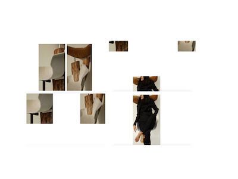

GEORGIA MILLS
Why did the developer quit his job?
Because he didn't get arrays!!
Hello, I am a full-stack junior developer with a passion for user experience and design.
Being both creative and curious, I love working on every aspect of a project; from conceptualization, prototyping and design right through to testing, development and launch.
Since learning to code at Makers Academy, Europe's leading Web Developer bootcamp, I have been exploring the world of both front-end and back-end programming in a number of languages, discrovering its endless learning curves and unlimited potential.
Scroll down to see some of my skills and recent projects.
XP values
Softwear craftmanship
Test driven development
Agile Methodologies

Ruby | Rails
Javascript | Node.js
Swift | Xcode
React | Redux
Rspec | Jasmine | Mocha
Photoshop | Illustrator | Sketch
GRACE PRINCE

INTERACTIVE
ROLE
Developer | UX- and UI-Design
TECHNOLOGIES
Ruby | Sinatra | GSAP
DESCRIPTION
Grace Prince, a talented furniture designer from London came to me with a challenge. She wanted to create a beautifully designed online portfolio, animated to show off her playfull creative side, whilst highlighting her pieces in a professional way.
We worked through various scenarios together to come up with the perfect user experience.

FLARE
ROLE
Developer
TECHNOLOGIES
Swift | Xcode | Firebase
DESCRIPTION
Flare, the love child of Snapchat and Pokemon Go, is a social mobile app for sharing spontaneous moments based on where you are. Thought up one evening over dinner, myself and a team of four other developers decided to turn it into a project, spending the next few weeks learning swift/Xcode from scratch, creating our MVP following TDD and agile methologies.
JOJA LONDON

ROLE
Co-founder | Designer
TECHNOLOGIES
Wordpress
DESCRIPTION
Joja London is a boutique bow-tie company that went from a small market stall I ran in my spare time, to a full blown company. We hand-make custom bow-ties and wedding accessories here in London, for customers all around the world. From creative director on photo-shoots and designer for special editions, to accountant and sales rep, I have experienced many of the different roles required in a creative start-up.


BLOOM

aka. The Happiness Project
ROLE
Developer
TECHNOLOGIES
Javascript | Ruby on rails | Rspec
DESCRIPTION
Bloom is a skills tracking app for budding web
developers built during a three day hackathon.
Users who sign up can rate their confidence
levels in a number of skills.
They can then visualize their progress through charts and tables and recieve an each day with helpful resources related to the skill they're least confident in.